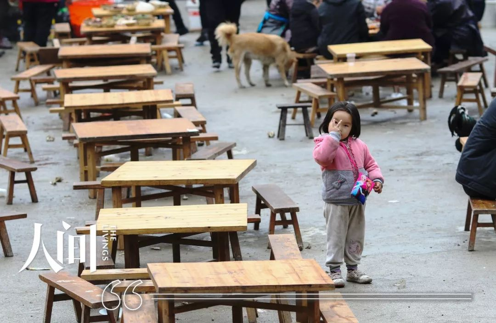
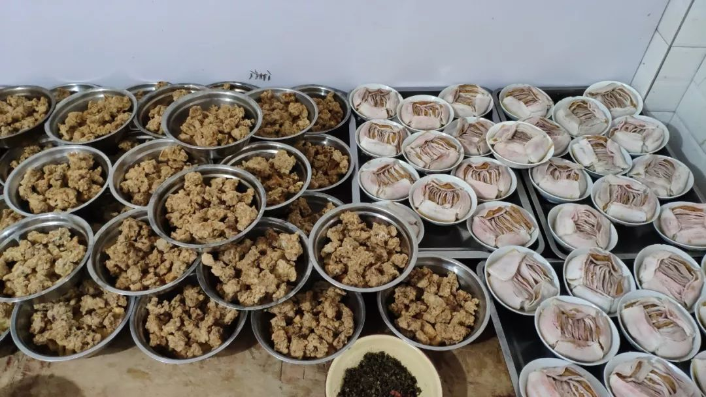

你喜欢的那些城市小店还好吗？| 三明治
原文链接 备份链接 几乎没有看到过上海这么萧瑟的景象，冬天法国梧桐的枝桠本就光秃秃的，将街道原本的模样摊在人们面前。路边的店铺大多都紧锁着门，偶尔能瞥见三三两两的行人，大家也会刻意保持着间距，疾步向前。 这个城市似乎正在隐秘地在进行着一 …


每办一次大规模的宴席，小店里的几个人就像在打一场艰苦卓绝的战役。这是实打实忙到飞起的一天，也是我婆婆的日常。
配图 | VCG
前 言
_
_

这是一场战争，在新年的伊始，爆发在每一个普通的、平凡的中国人身边。
这是我们的战争，我们热切地讨论、谨慎地分析，为灾难中陨落的生命而痛惜，为医者大无畏的精神所感动，为我们能为之所做的点滴小事而不懈努力。
人生海海，我们且行且惜。
网易人间「我们的战争」特辑，讲述每一天，我们与疫情赤膊相见。
我们的战争丨连载10
农历腊月二十九，先生一边在房里收拾行李，一边小心翼翼地问我：“那我们还回去吗？”
不久前我们刚刚新婚，按老传统，第一年得去男方家里过春节，但我的内心却是有些抗拒的。
那几天，外面的情况实在不太好，网上铺天盖地的新闻都是专家在反复强调：大家过年不要聚会、不要聚餐。先生更是跑了十几家药店，都没有买到口罩，走到最后一家的时候还被店员“嘲讽”：“你现在还想买口罩啊，整个成都都没得咯！”
而在我眼里，最可怕的是先生老家的那幢4层小楼——
小楼位于成都200多公里外的一个小场镇上，一二层已经被公婆改造成了餐馆。早在2个月前，婆婆就开始发愁了。平时，场镇里的人大多在外务工，只有过年才能回老家团聚，为了图热闹，无论是办生日宴还是喜酒，大家都喜欢挑正月里的日子；再加上现在大家的生活都好了，春节宁愿在家里玩也不愿意出来打临时工，春节也请不来几个人；末了，她叮嘱先生，“今年正月，家里接了500多桌席，你早点回来帮忙。”
我知道先生心里多想早点回去干活——腊月二十八，店里的两个嬢嬢就放假了，如果他不回去，婆婆一个人除了准备几十桌的材料外，还得干各种杂活儿，一双手根本不够用。
可再一想到几天之内，500多桌的人会在家里扎堆，“隐形的地雷”说不准就会踩上，我心里还是有点发怵。疫情形势越严峻，家里满是人头呜呜泱泱的场面越是在我脑袋里挥之不去，内心里不免五味杂陈。
但考虑到新建立的家庭，我还是说：“不回去，那去哪儿啊？”
最终，我们还是在原定计划的二十九号下午出发了。

一路上，先生一直都沉浸在一种左右摇摆的状态中，他很纠结，觉得家里人员复杂，把我带回去，万一伤害到我怎么办。可他确实想回去帮父母干点活，大过年的，把我一个人留在成都，他心里又过意不去。
于是，3个多小时的路程过后，蜿蜒逼仄的两车道旁出现了农田，车子到了场镇上，七弯八拐再走几分钟，爬上了一个长长的斜坡，我们就到家了，天也完全黑透了。
婆婆看见我们的车，一路跟在后面走。我朝车窗外喊她，婆婆“哦”了一声，宽脸盘上立即露出了一口整齐的大牙。她个子不高，只有1米5左右。很瘦，穿着一件臃肿的袄子，外面还套着一条红色的围裙，反倒显得人胖乎乎的。
刚下车，婆婆就拦住了我们，“从旁边的小门走，他们在大厅喝酒，闹得很，不安逸的。”说罢她挡在我们前面，探头探脑的，像做贼一样小心翼翼地朝家门口走去。
先生觉得不和邻居打招呼不礼貌，婆婆却压低了声音，“哎呀！喝得二麻二麻的，不安逸的……”我觉得有点好笑，但后来想想，婆婆大概是怕我不习惯。
我们还没走到门口，婆婆的“掩护计划 ”就失败了。邻居喝了酒走出来，其中一个直接蹦到先生身上，又搂又抱，两手挂住他的脖子不肯下来；另一个抓起我的手，在我的手背上狠狠亲了几口，留下了一滩凉凉的口水……
婆婆赶紧把他们拉开，我转身躲着人，把那只被亲过的手洗了好几遍。
我问婆婆周围有没有从武汉回来的人，她说有，“几天前斜对门有一个女人才从那边回来。”
而且，那个女人不仅回来了，前些天还在外面打牌。我急忙提醒婆婆千万不要去，“没——有，”婆婆说：“年底我们忙都忙不赢，哪有时间打牌？”
先生也讲了很多和疫情相关的新闻，让婆婆做好暂停营业的心理准备，婆婆的表情立刻变得很严肃，她盯着桌面一动不动，接着使劲捶了捶腰，说自己腰痛的毛病又犯了。说完就站起身，到洗衣槽边刷鞋子去了。
很明显，她在回避这个话题。

按照往年的惯例，除夕和初一餐馆是不营业的，公婆一年到头也就休息这两天。
可今年除夕一大早，两个人就忙活开了，中午有5桌客人要来吃年饭，都是街坊熟人，不好拒绝。
我下楼的时候，婆婆正在扫后厨地板上的水渍，她一脸凝重，边扫边嘀咕。一问才知道，婆婆早上接到了2个退订电话，一个是初六的宴席，20几桌；另一个是正月十六的婚宴，50几桌。
“最近肺炎形势太凶了，不敢办席，本来是好心宴请，别到时还办了坏事。”对方都这么说。
婆婆闷闷不乐，先生就开导她：“妈，你要正面看待这个事情。钱以后还可以赚，如果因为做生意感染了，得不偿失。”婆婆没有接他的话，放下扫把，转身进了厨房。
后来，先生偷偷告诉我，2019年下半年，婆婆把家里的一部分现钱借给亲戚应急，又因为买房贷了款。为了准备这500多桌席，专门出去借了20万才囤的货，本想着再辛苦一年尽量把钱还上，可谁知道，疫情以来，所有的计划都被打乱了。
我只好宽慰先生，说实在不行，我还有一笔理财可以取出来应急。说着，先生的脸就黯淡了下来，“我是不是太没用了？”
先生心疼公婆辛苦了那么多年，希望他们能早点停下来休息玩乐，但他暂时没有能力撑起整个大家庭，总是为此感到自责。他又觉得愧对我，“把你带回来徒增风险，又不能给家里帮上什么忙。” 他想了想，“要不我先送你回去吧。”
眼下，连这个偏远的场镇，似乎也不太安全了。中午来吃饭的客人，四五十个人里只有零星几个戴了口罩。而镇上的药店，早就没有口罩卖了。
下午，镇里的工作人员来店里登记预订出去的宴席桌数，但没有提禁止营业的事。婆婆签名的时候看了一眼名单，发现几家餐馆里，就数我们家的酒席预订数量最多。“我不管别人有没有如实登记，反正我把预订了的都登记上了，该上报就上报。”婆婆说。
私下里，先生就对我摇了摇头，“其实我倒希望政府快点出通知，禁止举办宴席。这样对大家来说都安全，虽然家里肯定要受经济损失。”他又陷入了另一种矛盾，心里难免又不好受起来。
先生曾经断断续续跟我讲过很多往事。我也是后来才逐渐明白，这个餐馆对于全家人的意义。
2000年左右，公婆在老家东拼西凑才开起了这家餐馆。一开始，餐馆的生意并不好，一些在外地开餐馆的亲戚纷纷劝他们离开场镇这个小地方，去外地打工。为了生活，公婆把自家的店关了，听说哪里赚钱就去哪里。他们先后去过深圳、广州、中山，最后又辗转到了重庆。
因为没什么文化，又没有专业技术培训，两个人都只能给别人家餐馆做帮厨。
那时候，我先生已经上小学了，空闲时间就会到父母打工的店里玩。他告诉我，有段时间餐馆里很流行一种饮料，用折耳根做的，浅黄色，装在玻璃瓶里。
“你见过吗？”他想在网上找图片给我看，却什么都没有找到，“甜甜的，真的很好喝。”每次先生说起这种饮料，眼里总泛着光，而我就会想起凉拌折耳根的那股味道，继而打个冷战。“你没过过苦日子，你不懂。”先生笑着摇摇头。
先生年纪还小，看着别人喝饮料也馋，但他知道父母打工赚钱不容易，就自己想了个办法。
一天，客人走了，饮料瓶被服务员收到角落里垒了起来。先生就偷偷蹲在旁边，把剩了饮料的瓶子拣出来，再一点点地滴进一个瓶子里。不知“搜刮”了多久，瓶子里终于存了小半截小拇指那么高的饮料，他仰起头，一口喝了下去。
就这样，先生常去偷喝别人剩下的饮料，直到有一天被婆婆无意间撞见了。婆婆没有骂他，而是偷偷躲到一边哭了起来。也正是因为这件事，公婆才下定决心回家继续开餐馆、当老板，“再难也要让孩子过上好日子”。
“现在我妈说起这件事，眼泪花还是包起的。”先生的眼睛也红红的。
大年初二，店里定出了30多桌酒席，这是新年的开门生意。为了提前做好准备，大年三十这一天，婆婆收拾完厨房就要去地里摘菜。
她和先生背起背篼，各抓了一把菜刀，我也跟着出了门。在街角的拐弯处，药店老板娘主动和婆婆打招呼：“我劝你们把口罩戴起，真的。”婆婆亮出了大嗓门：“你这里还有口罩没得嘛？”
“没得咯，早就卖完咯！”
我回头一看，婆婆的脸又往下耷拉了一点，她一声不吭往前走，先生跟在后面，也是满脸的心事重重。
砍完菜，我们经过另一家药店，远远就看见店主拎着一个大口袋跑过来——是口罩。已经有好几个人在店里等了，婆婆见状，一头扎进去，买到了40个，花了200元。
除夕夜，婆婆坐在沙发上准备给小孩子们的压岁钱。她伸出拇指在舌头上沾唾沫，低声数着手里的钱。突然，抬起头递了一个圆鼓鼓的红包给我，“呐，这个小红包是给你的，今年是第1年，明年就没有了哦。”
给红包都这么“粗暴”，我心里觉得有点好笑。不过，简单、直接、实在也确实是我公婆一贯的作风。
2003年，家里的餐馆刚起步，就要和场镇上五六家类似的小餐馆竞争。其实几家的菜品和价格都差不多，但很多人就是认准了我公公做的菜。甚至还有隔壁镇的人专门跑到我们店里，就为了吃一盆公公做的水煮鱼。
经营这家餐馆，公婆也没有什么诀窍，只不过是炒菜的时候，公公经常会随手多抓一把，如果客人是干重活的，公公会再多放一些肉，“干体力活的，不容易”。
到了结账的时候，婆婆主动把零头给抹了也是常有的事。
不过对方要是想蹭点“人情面”故意耍赖，那可不行。有一次我在家，遇到一位远房亲戚来吃饭，想赖掉50块钱。婆婆不同意，对方花言巧语想糊弄过去，结果婆婆一把抓住他的胳膊，又指了指我，扯着大嗓门喊：“在小辈面前你都不学好，像什么话？”最后，对方招架不住这种彪悍，乖乖掏了钱。
也许是身处农村的缘故，也许是性格的原因，婆婆并没有大多数生意人的世故和圆滑。她说话做事直来直往，亮出大嗓门，也算是餐馆的一个特色。

大年初一早，我下楼就看见婆婆的脸上有怒气，有亲戚在一旁语气严肃地对客人说：“不行，这肯定不行。”
原来，早上餐馆的大门刚打开，这个客人就进来对婆婆说，他要退掉初二的30桌。做生意都讲究好彩头，大年初一开门第一句听到这个，婆婆心里很不舒服。亲戚也帮着好言相劝，“如果早两天说退订，那肯定爽快退给你的，但现在材料都准备好了，突然说退，这让我们也为难。”
大概对方也觉得过意不去，就说回去再商量商量。可是经过这件事，家里的气氛变得更加凝重了。
照这样发展下去，后面的桌席大概多半都要被退订了。场镇是农村，不像市里进货方便，所以婆婆在年前就把货物都囤好。如果桌席全都退了，那这20万的货该怎么处理？
又过了个把小时，那个客人又来了，他说大家相互理解，就退6桌，只请附近的人，婆婆勉强同意了。
可到了下午，事情又发生了变化。
在镇政府上班的表嫂给家里打电话，说已经接到通知要管控餐饮行业了，只是不知道什么时候下发，要婆婆做好心理准备。
此时，家里的牛肉已经烧好了，几十桌的蒸菜摆好了盘，几十只家禽也都解了冻，如果突然接到停业通知，这些材料怎么办？如果没有接到通知，有携带病的客人来了，出了事又该怎么办？
一时间，全家人都陷入了忧虑，坐立难安。
到了晚上六七点，又来了3个退酒席的人，大概共有五六十桌。婆婆一边从布腰包里往外掏定金，一边叹气：“老子，我备了20万的货！”
“冻起来撒。”对方轻松地说。
他们前脚刚走，后脚镇政府的工作人员就来了，通知公婆说，从现在开始所有的宴席都不能办了，“最近的肺炎实在太凶，出了事大家都负责不了。”
婆婆说初二的菜已经准备好了，对方听了更着急，“真的不行真的不行！没有例外的，大家都要遵守。”
等这拨人终于离开，婆婆彻底陷入了萎靡和失落里。她肩上不仅扛着几十万的贷款，还有满满一冻库的货。
生意是不能做了，但拿出来的生鲜还是要处理的。我只能和先生一起，把几十个家禽装进袋子，准备背进冻库里。冻库是两年前刚修的，大概有20个平方，里面的温度保持在零下18度。冻库的门口常年放着一顶棕红色的毛帽子和一件棉衣，这是婆婆的“装备”。
先生先给冻库断了电，再打开门，白色的冷气迫不及待地往外喷涌。一眼看去，冻库门口整齐地码着十来箱大虾；再往里看，是土鸡、鸭子和鹅，还有各种牛羊肉和猪排骨。
按照一桌一只鸡来算，冻库里光是鸡，就至少有四五百只。本来它们很快就要成为客人的盘中餐，但现在看来，也只能继续待在冷库里。
我搬了一大袋，就气喘吁吁的，热得外套都穿不住了。我想，如果我和先生今年不回家，那这一大堆的东西就得由公婆两个人搬。看着婆婆那瘦小的身躯忙上忙下，我也不禁在心里感叹，她竟然有这么大的能量。
搬完东西，婆婆回后厨看到了准备好的蒸菜，赌气说：“都丢了，看着烦。”
亲戚们劝她留着自己吃，公公听了，无奈地笑了，“这些东西，一家人关起门来吃一年都吃不完。”
大家也忍不住跟着笑了起来。

| 婆婆备好的蒸菜（作者供图）
这一天夜深了，婆婆还在挨个打电话。她先告诉帮忙的嬢嬢们，桌席都取消了，不用来了；又联系没有退订的客人们，主动把定金转了过去；最后，她怕浪费食物，让送菜的人把没开封的蔬菜拿回去卖，可对方不愿意，她也只好作罢。
忙完这些，我们才算是真正地坐下来休息。
回家的这几天，我还是头一回见到婆婆闲下来。大家聊天的时候，大概是聊到了平时干活的事，婆婆突然把自己的双手伸到了亲戚面前。
婆婆的手背上已经布满了褶皱，大概是因为常年浸泡在水里、洗洁精里的缘故。又因为天天要和蔬菜、肉类、刀具打交道，她手部的皮肤很粗糙。双手张开，个别手指已经皲裂变形了，但也是这双手，扛起了大半个家。
在这家开了近二十年的餐馆里，公公是主厨，婆婆就是财务总监、门面经理和帮厨。他们只雇了两个人帮忙，哪里缺人手，婆婆就要顶上去。
店里办席的场面我见过。一楼、二楼和对面租来的铺子里，满满当当摆了40几张桌子。还没到开席的时间，人就陆陆续续坐满了。大人聊天抽烟，小孩穿梭打闹，有人要杯子、有人问厕所，还有人时不时跑到后厨来看。到处都是闹哄哄的。
到了正式上菜的时候，婆婆打开大蒸箱，腾腾的水汽涌出来。她先端出一份份蒸菜，接着左手端菜，右手拿盘，两手一扣快速往右一翻，摆盘就算完成了。因为蒸盘太烫，婆婆每翻一次，都要快速地摩擦左手的拇指和食指。
有一次，我看到上菜的人手不够，就想帮着把堆满菜的托盘端出去。可我还没走两步，就要端不住了，婆婆连忙喊：“你不端你不端。”然后立刻窜过来接住托盘，端着麻溜地往外走，健步如飞。
还有更大的场面——如果订席超过40桌，客人们就得分批吃饭。刚有桌子空出来，就得赶紧收拾干净让下一批客人入座。等人潮全部散去，地上就是一片狼藉，到处是啤酒瓶、饮料瓶、废纸和烟头。
嬢嬢们在前面倒剩菜、收碗筷、扫地，婆婆就在后厨埋头洗碗。先把碗筷放在左边的盆里洗刷干净，又放到右边的清水盆里过一遍，再用流水冲几次，最后才能摆进消毒柜里。
每办一次大规模的宴席，小店里的几个人就像在打一场艰苦卓绝的战役。这是实打实忙到飞起的一天，也是我婆婆的日常。
只是今年，婆婆再也没得忙了。
等晚上睡觉的时候，先生告诉我，其实他听到政府禁止办宴席的消息，紧绷的神经才终于松弛下来了，“如果这个小场镇发生聚集性的传染，那后果不堪设想。”
先生的单位原本要求他初二开始上班，但我们实在来不及赶回去，但也得准备返程了。
早上醒来的时候已经八九点了，我竟然听到婆婆在外面说话的声音，“躺在床上翻来覆去一整夜睡不着，心里慌得很。”
平时早上五六点，公婆就下楼干活了。如果遇上赶集的日子，婆婆4点钟就要起床，背起背篼去采购。她身材矮小，背篼里装满东西，比她还要高出一大截。
我站在楼上望下去，场镇的街上一个人都没有，呈现出罕有的安静。我想不仅是婆婆，可能昨晚还有其他人没有睡着。
我和先生就要离开了，面对后厨堆积如山的蔬菜，婆婆不停地叹气。先生知道婆婆的想法，就赶紧让她给我们多备点菜带回去。
婆婆搬来一个人字梯放到挂满香肠腊肉的房梁底下，熟练地爬了上去，“这是自己杀的猪做的，这是买的肉做的，还有这个是你四妈的。”她的手指在密密麻麻的烟熏制品中点来点去，然后低下头来看我，“给你妈妈也带点去，腊肉香肠我都给他们做了点。”
婆婆的嘴里不停地絮叨着，“还有这个，是给大外公他们几家人的，每户六节香肠，一块腊肉。”这种细腻周到，完全不像平常大大咧咧的她。
取了香肠，婆婆又到外面的院坝上采青菜。拴在角落里的黑色老狗看见她，兴奋得不停地来回踱步。

| 婆婆给我们带的菜（作者供图）
昨晚，婆婆明明累得不行了，还不忘出去遛这条老狗。我想去看看，婆婆叫我不要过去，说臭，又转头“呵斥”，“那么老了又不死，丢了你又舍不得。”
不知道老狗听懂没有，它就站在原地静静地看婆婆，掉了毛的尾巴竖起来，左右摇摆着。我突然想起以前婆婆说过，这条土狗跟着他们大概有10年了。
10年前，家里餐馆的生意已经渐渐稳定了，公婆不再为了多赚点钱，起早贪黑卖早餐，但先生至今还记得那段卖早餐的日子。
那时候，每天早上上学前，他都会主动在店里帮父母包抄手，看时间差不多了，再跑步去学校。尽管当时家里的条件还不是太好，但放学回家，他总能吃上父亲专门给他开的小灶。而且家里的桌上，经常会有一份炖煮软烂的卤蹄髈在等着他。而那些从前喝不到的折耳根饮料，也终于可以敞开肚皮喝了。
那时候，父母仿佛是要把小时候没能给他的东西，全部加倍补偿给他一样，“我爸妈真的对我太好了。”直到现在，先生想起来还会这么说。

吃午饭的时候，亲戚劝婆婆过两天把蔬菜都拿出来卖，“能卖一点是一点。”婆婆似乎还是不能接受现实，她没有搭话，还自嘲：“开饭店的都要变成卖菜的了。”我拍拍婆婆的肩膀，告诉她不要太担心，疫情总有一天会控制住的。她皱着眉头笑了笑。
吃完饭，我们就又踏上了返程的路。
等初三一大清早，先生就接到了婆婆的电话，刚接起来就听她在那边叹气：“哎呀，这可怎么办啊！睡得都分不清白天和黑夜了。”紧接着，婆婆就发现自己拨错了，她原本是想打给舅舅的。
初四，我们在家族群里看见家人发的视频。亲戚们在街上戴着口罩，一起帮婆婆卖菜。因为去的地方类似于集市，很快就有政府的工作人员来劝导，他们马上就收拾东西回家了。
虽然店不能开，但一个早上卖出去的菜和肉，也有1000多块钱，这算是给公婆失落的春节，找到了一点点的寄托。眼看着地里的菜就要烂了，婆婆又背起背篼抓起刀，打算把它们全都收回来，晾成酸菜备用——人只要肯干，总会有办法的。
每天，先生都会和公婆视频聊天。公婆也已经可以熟练地汇报自己在哪里，跟谁在一起，正在做什么了，“没有出去，没有出去，你看嘛。”婆婆举起手机对着周围晃一圈，还不忘在那头调侃，“晓得你要来查岗。”
家人就是这样，为了彼此奋斗，知道彼此安好，就是生活里最大的幸福。
昨天，婆婆在视频里跟我说，那天走得急，忘了让我们把苕粉、面条、土豆都拿回去，“超市离得远，你要走好久才能到。”她似乎忘了我们有车，也忘了从老家带回来的菜，够我俩吃好久。
也许，我们在她眼里，还是永远长不大的无助的小孩。也许，在困难面前，历经生活打磨的婆婆已经柔韧到可以扛住一切了。
编辑 | 沈燕妮
_
_
_
mallgar
梦想成为会写字的小厨

_
本文系网易新闻人间工作室独家约稿，并享有独家版权。如需转载请在后台回复【转载】。
投稿给“人间-非虚构”写作平台，可致信：thelivings@vip.163.com，稿件一经刊用，将根据文章质量，提供千字500元-1000元的稿酬。
投稿文章需保证内容及全部内容信息（包括但不限于人物关系、事件经过、细节发展等所有元素）的真实性，保证作品不存在任何虚构内容。
其它合作、建议、故事线索，欢迎于微信后台（或邮件）联系我们。


点击以下「关键词」，查看往期内容：
群聊魔鬼 | 月嫂回忆录 |家暴 | 健身房的坑 | 生子丸
考公| 萌宠博主 | 82年的金智英 | 女大学生的毒虫男友
大牛失业 | 卧底狱警 | 娶妻改命 | 中年男人的窝囊死亡
职校老师 | 产科记事 | 改嫁 | 寻业中国 | 三大队 | 股市梦碎
扶弟魔 | 末路狂花 | 下乡扶贫| 外卖小哥 | 杀死我的女神
东北相亲 | 我放弃了科研 | 网红女同学 |与巨婴离婚的女人

原文链接 备份链接 几乎没有看到过上海这么萧瑟的景象，冬天法国梧桐的枝桠本就光秃秃的，将街道原本的模样摊在人们面前。路边的店铺大多都紧锁着门，偶尔能瞥见三三两两的行人，大家也会刻意保持着间距，疾步向前。 这个城市似乎正在隐秘地在进行着一 …
原文链接 备份链接 一堆堆高土、一捆捆树桩、一台台挖机、一辆辆卡车横在各个村庄的村口，一个个交警守在城区、乡镇各个紧要路口。蕲春县的村村“封”，像铁桶一样严密。 这是一篇湖北乡村的疫情观察，发自湖北省蕲春县。 它属于黄冈市，距离武汉只 …
原文链接 备份链接 凤凰新闻客户端 凤凰网在人间工作室出品 武汉的朱红一家，在过去的一个月里，经历了生离死别。身体一向很好的公公，从高烧到意外离世，只有7天。 葬礼结束的当天下午，片刻不敢耽误，朱红、婆婆、小姑子（老公的妹妹）马上到医院 …
原文链接 备份链接 作者：冯超 来源：*商业人物*（ID：*****biz-leaders）* 那天晚上，新东方创始人俞敏洪和很多网友一样，等待着李文亮的消息。等到凌晨一点，太疲惫，就睡着了。早上，他看到消息后，“心一下子坠到谷底，失魂落 …
原文链接 备份链接 从第1个店开业的第1天开始，到3个店开业，再到这一天是13年零5个月又5天。无论有什么样的艰难困苦，我们每一天都是微笑着开门迎客，赚着辛苦的钱和清白的好名声，从来没有一天是不开门的。 配图 | VCG 前 言 _ _ …